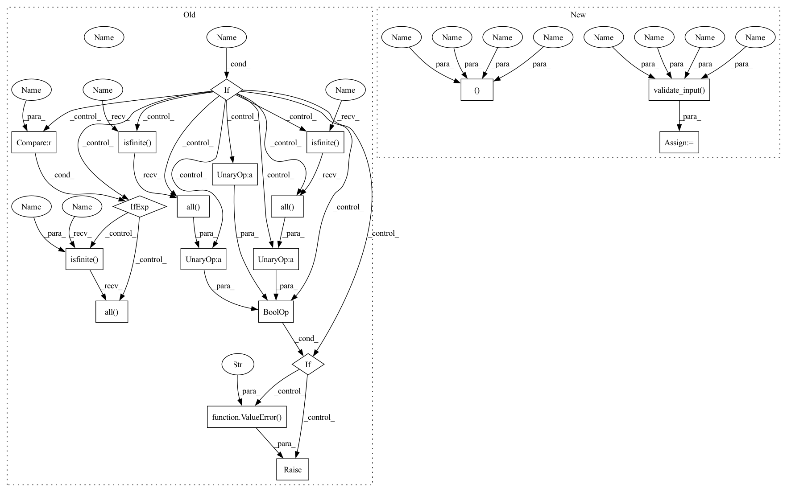

Pattern ID :37002

Before Change
def __init__(self, x, y, w=None, bbox=[None]*2, k=3,
ext=0, check_finite=False):
if check_finite:
w_finite = np.isfinite(w).all() if w is not None else True
if (not np.isfinite(x).all() or not np.isfinite(y).all() or
not w_finite):
raise ValueError("Input must not contain NaNs or infs.")
if not np.all(diff(x) > 0.0):
raise ValueError("x must be strictly increasing")
// _data == x,y,w,xb,xe,k,s,n,t,c,fp,fpint,nrdata,ier
After Change
def __init__(self, x, y, w=None, bbox=[None]*2, k=3,
ext=0, check_finite=False):
x, y, w, bbox, self.ext = self.validate_input(x, y, w, bbox, k, None,
ext, check_finite)
if not np.all(diff(x) > 0.0):
raise ValueError("x must be strictly increasing")
// _data == x,y,w,xb,xe,k,s,n,t,c,fp,fpint,nrdata,ier
In pattern: SUPERPATTERN
Frequency: 3
Non-data size: 19
Instances
Fragment ID: 105274878
Project Name: scipy/scipy
Commit Name: 0a25daf47631b50eba9e29a7b2ff5509a51dfea9
Time: 2020-04-26
Author: asakai.amsl+github@gmail.com
File Name: scipy/interpolate/fitpack2.py
M Class Name: InterpolatedUnivariateSpline
N Class Name: InterpolatedUnivariateSpline
M Method Name: __init__(8)
N Method Name: __init__(8)
M Parent Class: UnivariateSpline
N Parent Class: UnivariateSpline
M File Name: scipy/interpolate/fitpack2.py
N File Name: scipy/interpolate/fitpack2.py
M Start Line: 600
M End Line: 618
N Start Line: 617
N End Line: 618
'>
Before Change
def __init__(self, x, y, w=None, bbox=[None]*2, k=3, s=None,
ext=0, check_finite=False):
if check_finite:
w_finite = np.isfinite(w).all() if w is not None else True
if (not np.isfinite(x).all() or not np.isfinite(y).all() or
not w_finite):
raise ValueError("x and y array must not contain "
"NaNs or infs.")
if s is None or s > 0:
if not np.all(diff(x) >= 0.0):
raise ValueError("x must be increasing if s > 0")
else:
After Change
def __init__(self, x, y, w=None, bbox=[None]*2, k=3, s=None,
ext=0, check_finite=False):
x, y, w, bbox, self.ext = self.validate_input(x, y, w, bbox, k, s, ext,
check_finite)
// _data == x,y,w,xb,xe,k,s,n,t,c,fp,fpint,nrdata,ier
data = dfitpack.fpcurf0(x, y, k, w=w, xb=bbox[0],
xe=bbox[1], s=s)
'>
Fragment ID: 105274876
Project Name: scipy/scipy
Commit Name: 0a25daf47631b50eba9e29a7b2ff5509a51dfea9
Time: 2020-04-26
Author: asakai.amsl+github@gmail.com
File Name: scipy/interpolate/fitpack2.py
M Class Name: UnivariateSpline
N Class Name: UnivariateSpline
M Method Name: __init__(9)
N Method Name: __init__(9)
M Parent Class: object
N Parent Class: object
M File Name: scipy/interpolate/fitpack2.py
N File Name: scipy/interpolate/fitpack2.py
M Start Line: 169
M End Line: 188
N Start Line: 169
N End Line: 170
'>
Before Change
def __init__(self, x, y, t, w=None, bbox=[None]*2, k=3,
ext=0, check_finite=False):
if check_finite:
w_finite = np.isfinite(w).all() if w is not None else True
if (not np.isfinite(x).all() or not np.isfinite(y).all() or
not w_finite or not np.isfinite(t).all()):
raise ValueError("Input(s) must not contain NaNs or infs.")
if not np.all(diff(x) >= 0.0):
raise ValueError("x must be increasing")
// _data == x,y,w,xb,xe,k,s,n,t,c,fp,fpint,nrdata,ier
After Change
def __init__(self, x, y, t, w=None, bbox=[None]*2, k=3,
ext=0, check_finite=False):
x, y, w, bbox, self.ext = self.validate_input(x, y, w, bbox, k, None,
ext, check_finite)
if not np.all(diff(x) >= 0.0):
raise ValueError("x must be increasing")
// _data == x,y,w,xb,xe,k,s,n,t,c,fp,fpint,nrdata,ier
'>
Fragment ID: 105274877
Project Name: scipy/scipy
Commit Name: 0a25daf47631b50eba9e29a7b2ff5509a51dfea9
Time: 2020-04-26
Author: asakai.amsl+github@gmail.com
File Name: scipy/interpolate/fitpack2.py
M Class Name: LSQUnivariateSpline
N Class Name: LSQUnivariateSpline
M Method Name: __init__(9)
N Method Name: __init__(9)
M Parent Class: UnivariateSpline
N Parent Class: UnivariateSpline
M File Name: scipy/interpolate/fitpack2.py
N File Name: scipy/interpolate/fitpack2.py
M Start Line: 739
M End Line: 772
N Start Line: 748
N End Line: 749